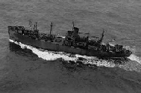

Word Processing by Joline Doersam
Input by various former Company C members
Maintained on web site by Rowland Lewis
Last Modified 01/16/2006



"The USS Callaway. Our transport for the cruise to Saipan"
After leaving Honolulu on May 29, 1944, we were advised that the landing would be on Saipan (even though most of us had never heard of it before.) An incident of note, which occurred enroute on June 8 or 9: We were at Eniwetok where the task force rendezvoused. We pulled into the harbor after dark. You could see shadows of many, many ships of all sizes, and we were moving at a snail's pace toward an anchorage assignment when a much smaller vessel ran across our bow and we rammed her. Much confusion in the dark, but many of our men below decks did not even notice the bump. The next day rumors circulated that several sailors on the smaller vessel died. I think we anchored there for two nights and then went on to Saipan.
The dawn of June 15, 1944 had us scrambling down the nets into Amtracs off the Callaway. We were to land near a town called Charan Kanoa. A sugar cane refinery there had been reduced to rubble by a three-day ship and air bombardment, except the smokestack had been deliberately left standing as a visual guide for the incoming Amtracs (which proved to be a mistake.) Webmasters Note: The landing plan provided that we were to stay in our tractors until we reached the "O1 Line" (the "O" stands for Objective) which was about 1200 yards inland. It didn't work because of the unfavorable terrain and the heavy Japanese artillery and mortar fire. It did result in Company C being badly disorganized for a while since some tractors traveled further inland than others prior to unloading their troops. The original Amtracs did not have a back flap ramp to disembark from, you had to roll over the gunwales as in exiting Higgins boats. We had penetrated the beaches a hundred yards or more but terrain dictated that it was time to go over the sides. It was a long drop to the ground, but we were used to it. Ralph Linaweaver rolled correctly out of his Amtrac but was dead before he hit the ground - the first man in "C" Company to be killed in action (KIA). Ralph was a nice young boy from Upland, PA. A picture of him playing cards is on the front first page of the Red Book.
Rifle fire and mainly Japanese mortars gave us a thorough baptism of fire that first day. "C" Company wound up with four KIA, (Linaweaver, Lt. Erwin Hall, Marvin Gibbs, Ed Fransen) and 13 wounded and evacuated (WIA):
| Name | Name | Name |
|---|---|---|
| Caroll Hocker | Harold Catlow | Dave Hartigan (returned to action Jun 24) |
| Richard McDonald | Ed Pratt | Robert Milan |
| Coolidge (Roy) Newcomb | John Cozma | Jimmie Owens |
| Tom Hancock | John Slimak | William Reese |
| John Darmek |
Most of "C" Company dug in about dusk in a very open area and were harassed by mortar fire, randomly through the night and early morning. Whatever units that were supposed to be on our flanks - the hook up was flimsy, and we didn't advance very far on the second day. One "C" Company man was found the 2nd morning with a knife in his back - my very weak memory says it was Malcom Eisman, who was one of the KIA's of the second day. The other two men were Bill Taylor and David Chainey.
June 16 (incident on Saipan from Russell Gross)
"The island was Saipan, the temperature was about 110 degrees in the shade, but there wasn't any shade. We had just shoved off from the tennis courts of Charon-Kanoa on our way to our first "hill" objective - Mt. Fina Susu, when we were told to hold up, as many of us had run out of drinking water, we held our canteens over our heads as the spotter planes flew over, hoping they would pass the word. All of a sudden I heard a muffled thud, no doubt an incoming mortar round with my name on it. I felt for blood but couldn't find any, and I didn't hurt so I guess they misspelled my name.
After an hour or so waiting to move out, I rolled over on my backpack and placed my hands on my helmet to relax. All of a sudden a finger stuck through the helmet! I ripped it off, and sure enough, a shrapnel fragment had gone through the steel, the liner and stopped in the mosquito netting. I kept the shrapnel fragment for months, but finally lost it."
The Webmaster and the author have known of people who didn't know enough to come out of the rain. But not knowing you were hit in the head - Wow! Something must've been very hard! (Russ, I didn't want to type this but Dad made me! - Joline)
We were harassed all day with sporadic mortar and artillery shelling, accounting for most of our 22 WIA. I was sent back with about 6 men to obtain ammo from a dump in the "jungle trees". We found it, but so did the Japanese mortars. Exploding shells in the trees gave us a helpless feeling never to be forgotten, as there was no place to hide from shrapnel raining on you. I never lost my fear/hatred of mortars, and my own personal revenge was to assist our mortar squads at every opportunity until the war's end. You can "feel" artillery, and hear lead zinging by, but mortars "rained" on you from above without warning. However, our ammo detail made it back safely to the company. Our entire regiment experienced extremely heavy damage from the Japanese mortars for two and a half days, until someone discovered a spotter was on top of the smokestack. That discovery brought about the total demise of the smokestack.
At dusk we moved forward, about 100 - 200 yards to new foxholes at the base of a hill called Fina Susu. The 22 men wounded in action and evacuated for June 16 were:
| Name | Name | Name |
|---|---|---|
| John Penberth | Norman Gosse | Dominic Cimino |
| Roby Thornton | Duane Cue | Charles Dehn |
| John Leland | Howard Wilt | Wayne Griggs |
| Patrick McCusker | Mike Carrera | Patrick SanPietro |
| Paul Dieleterio | Matt Lesatz | Don Sothard |
| Don LaRue | Ray Ramon | Homer Booth (ret to action June 26) |
| Herbert Conover (ret to action June 23) | Vincent Sireci (ret to action June 24) | Charles Moss (ret to action June 20) |
| Bill McVey (not evacuated) |
Our third day on Saipan proved to be our worst day of the campaign, with 45 WIA and 4 KIA (second worst overall - the 8th day on Iwo was #1, will be addressed in the Iwo Jima Chapter.). We started to ascend Mt Fina Susu, which had an extremely steep, wide ridge at the top. The other side of the ridge was a gentle, sloped plateau. The Japanese had pulled back from the high ground about 200 feet and were waiting for us. Every one of us who came over the top was a sitting duck waiting to be shot. We were sent over in waves of 20 (+ or -) men about two minutes apart, until about 3/4ths of the company were over. Realizing our position, we were ordered back over the lip of the ridge to allow our own mortars and artillery to saturate the zone. Your webmaster had taken a few hits in the legs, among the many wounded. Merrill Quick and Dan Pedoza were two of the KIA. An excellent description and tribute to Merrill and to Dan written by Orvel Johnson are powerful reading. Click here to see Orvel's memories of Merrill Quick and Dan Pedroza. Or see the details of our KIA's. I know no details on him, but Norm Graham was also KIA.
This is a good place in this writing to add a tribute to the U S Navy medical personnel known as Corpsmen. All combat veterans have the highest praise for these men for what they did for us.
Our "Green book" history of the 4th Marine Division mentions a corpsman who belonged to the medical unit attached to the 1st Battalion, 23rd Marines for all our battles and early training days; Ernie Dobrante. Although the corpsmen were assigned to various units from one day to the next to receive varied training throughout the battalion, Ernie was frequently assigned to "C" Company. On July 16, 1944 (second day of the Saipan battle,) Ernie was near one of our supporting tanks when it took a direct hit and burst into flames. Ernie climbed up in the tank and pulled three men out and administered first aid to them, saving their lives. For this he received the Silver Star medal. Naturally, this would be a tough act to follow, but two days later on July 18, Ernie repeated the same action and received another Sliver Star! I have never heard of another person who got two Silver Stars within two days for the identical act of heroism.
Ernie is an active member of the 4th Marine Division Association and is also on our current roster of "C" Company. He was a great help with this history. A big Thank You to a really great man!
Back in Chapter one, I promised the rest of the story on Moses Iadanza. Moe was still a B.A.R. man in the first platoon, but this story came to me via 3 or 4 men in his squad over the next few days. When word was passed to move back over the lip of the ridge, Moe pretended not to hear, but kept firing his B.A.R. Several men hollered at Moe to "Come on!" Moe just said "F*#% 'em!" When his body was found in the same spot the next day, all his ammo had been expended. I heard many reports (guesses) about how many Japanese he had killed - let's just say it was more than his share. WE SALUTE YOU MOSES ANTONIO GIOVANNI IADANZA - 100% AMERICAN MARINE!
That is not quite the end of the story. In 1970, through a set of rare and lucky circumstances, I had an opportunity to visit Moe's brother, Costanza, in Summit, New Jersey, and spent about four hours with him. No one had ever contacted him since "the telegram" arrived in 1944. Costanza had a lovely wife and several children in their 20's. An 8x10 photo of Moe hung in the archway between the living room and dining room. The afternoon ended with both of us slightly under the influence. His daughter thanked me and said, "You made my father very happy!" (I never got back!)
| Name | Name | Name |
|---|---|---|
| Earl Moore | Phillip Kelly | J. C. Harris |
| Tex Hughes | Norm Osborne | Sidney Guidry |
| Rowland Lewis (Ret 6/23) | Ray Secules | M. F. Clark |
| Bruce Rogers | Ralph Perdue | Ivan Brown |
| Gerald Casey (Ret 6/23) | Chas. Rasanen | Bill Pearce (Ret 6/20) |
| Champ McDaniel(Company CO on Iwo) | Jack Ritter | Bill Booth |
| Allen Chapman | Art Andrade | Elden Atchinson |
| Willard Folk | J. E. Williams | Tom Droski |
| Pete Gaffney | Jimmie Clark | John Carroll |
| Jack Helton | George Bonnert | B. V. Benson |
| Ed Powell | Charles Minerich | Paul Kreider |
| Ray Vanderbeek | Bob Koehler | Bob Fiebig |
| Herbert Johnson | John Shipman | Heath O'Briant |
| Bill Finnerty | Ed Rajkowski | Pete Pino |
| Charles Padgett | Sid Gottschalk (not evacuated) | Bob Hauser (not evacuated) |
Our Company strength at this date of June
17, 1944
224 men landed on Saipan (9 more
landed June 25th)
-17 KIA or WIA June 15
-25 KIA or WIA June 16
-49 KIA or WIA June 17
-4 sick, evac, or MIA(?)
Total 95 (42% casualties)
A total of 133 still fighting at the close of June 17. We had pulled back just to the base of the ridge to dig in for the night. Because of our losses, we were "in reserve" on June 18, and basically did not move. The plateau was shelled all night by our own artillery, and also in the early morning of June 18. Late in the day we moved forward over the lip again about 20 - 50 yards and dug in. We officially had one man WIA and evacuated on June 18, Jerry Attili, our bugler. (I question the official date?)
There was no action on the afternoon of the 18th or early morning of June 19. Most men threw dirt on bodies in the area to hold down the odor, and we found about 10 Saipan civilians hiding in holes in the ground. A young lady emerged carrying an infant. I admit to difficulty in guessing ages, especially in Orientals, but the baby reminded me of others about 3 months old, and no more than 7 or 8 pounds. When the mother set the baby down it could hardly crawl. All these "prisoners" were obviously starved and terrified. I opened a can of "C" rations - "meat and hash", and handed it to the mother. The baby was naked and the mother was dressed in a burlap sack, but she reached down in her "dress" and pulled out two chopsticks, handing them to the baby. I then witnessed what I still consider one of the top ten amazing sights ever seen! The baby used those chopsticks perfectly, not spilling or dripping a single morsel. I stood transfixed. I am now 76 years old and still can't use chopsticks at all, even with a multitude of teachers, etc.!
The afternoon of June 19 had "C" Company again in the front line assault down the "plateau" through bushy terrain. It was a heavy firefight with lead zinging everywhere. We had apparently silenced most of the Japanese mortars and artillery in our sector but they still had rifles and machine guns, which they were using and pointing toward us. We lost six more KIA and ten WIA - evacs. Those KIA and WIA were:
| Name | Name | Name |
|---|---|---|
| Claude Stafford | Vince Clark | Henry Smagon |
| John Kinser | Rex Bridges | Lupe Gallegos |
| Name | Name | Name |
|---|---|---|
| Phil Fisher | Chas Killian (See story below) | Don McLean |
| Andrew Flood | Lt. Garfield Randall | Joe Blizzard |
| Ed Maderer | Fred Schmidt (ret to action Jun 21) | John Lemieux (ret to action Jun 21) |
| Norm Clavey (ret to action Jun 21) |
We actually achieved a planned major objective and went another 50 - 75 yards. Captain Fred was now called strictly "Charlie" ("C" Company C.O.). No one gave any sign who our officers were, nor did anyone ever salute or say "Sir" on the battlefield. Webmaster Note: It was general policy that no one wore insigna of rank or was called by rank on the battlefield. The Japanese singled out officers and NCOs as special targets when they were able to identify them. "Charlie" told us to move back from our overrun to set up a defense line for the night and wait for our flanking units. We moved back to the designated "line" while some Japanese bullets were still whizzing by. "Charlie" called me over and told me to go get his walkie-talkie that he had accidentally left at a certain "bush" 50 yards to the front. Using the ingrained technique of zig-zag-drop-roll-up and zig-zag-drop, etc., I ran to the bush with at least one sniper trying to get me. He was not a very good shot. Finding the radio, I scooped it up and used the same technique returning. I was within 20 feet of "Charlie" when top Sgt. Killian jumped up and shouted "Throw it to me!" I did!, while hitting the deck again. Killian raised both hands to catch the radio and a bullet, meant for me, went through both his extended hands. I always felt guilty, but the war was over for Top Killian! We heard later that he lost one finger.
The following paragraph should not be read by persons not wanting to read tragic, bloody incidents!
Several unplanned events occurred on the night of June 19. We all knew that on the front line that "anything that moved after dark was Japanese". That night an officer, not from "C" Company, decided to relieve himself in front of his foxhole - no one knew why! He was KIA by his own men! No names! About 20 feet to my right a heavy 37mm cannon had been set up on the line for the night between the first and second foxholes next to ours. (I have forgotten who my buddy for the night was - probably Bill Wetten.) The cannon went off once that night, and in the morning about 30 feet in front of us we found the body of a little girl about 8-10 years old, with a 37mm hole clean through her middle! War is "hell"!
"C" Company was now up to 48% casualties.
112 men (17 KIA, 95 WIA.) 116 men and officers were left on the line.
Fortunately, we had broken the backs of the organized enemy and we regrouped
for mostly mop up operations from June 20 to July 3. Our assignment was to move
north on the eastern side of the mountain ridge and Mt. Tapotchau. At the end
of June we moved over to the west side, and later back again to the east side.
During this two-week period our casualties were relatively light; two men were
KIA: Frank Ruger on June 24 and Bill Hallacy on June 27. (See
story below.) Four men were WIA and evacuated:
| Name | Name |
|---|---|
| Bill Clark - June 23 | Forrest Southwick - June 25 |
| Cliff Ward - June 23 (returned next day) | Angus MacCorquedale - June 26 |
| Bill Dawson June 23 (not evacuated) | Oliver Kennedy Jine 20 (not evacuated) |
In this period some occurrences are to be noted. Harry Hansen has written about several Saipan memories Click here to see Harry's letter. We also met Moe and Joe - two Korean laborers that we "adopted". In addition to Harry Hansen's letter, Orvel Johnson has written a very detailed account of Moe and Joe. Click here to see Orvel's memories of Moe and Joe. Moe and Joe taught us to say (in Japanese) "Come out! Come out with your hands up! Come out!" I haven't any idea of spelling, but it sounded like "Dete Koi! Ryote O Agete Dete Koi! Dete Koi!"
One day, we "found" a Japanese truck - a small flatbed type that was still was able to function even with our richer gasoline. It had the gearbox and steering on the right side, which took some getting used to. Some of our men threw their packs in the back and I drove the truck for a while, one morning, just behind our skirmish line. Suddenly our own artillery started to zero in on the truck - the spotters thinking it was still enemy operated. The old military game of "Let's get the hell out of here" commenced instantly, and fortunately our green flares halted the barrage before blasting our personal packs to bits. It didn't take much argument to abandon the truck!
Our company strength increased slightly by July 3, when 12 men, previously WIA, had recovered enough to gradually return (while losing 6 others), making 128 men on the line. In addition, ten "C" Co. men who had been involved in TQM unloading our supplies, ammo, etc., disembarked from the Calloway on June 25, and stayed back for a few days preparing meals and bringing up supplies, etc. A battalion officer made a plea for volunteers to join us on the front lines, and Bill Hallacy (a favorite cook) was a volunteer, but was killed on the way to join us. We didn't know the details, nor did we know he was KIA for a few days. We now had 136 men on the island of Saipan.
During the last few days of June occurred the famous firing of the commanding general of the 27th Army division. It is still argued by the "brass" of both Army and Marines to this day. I only know the 27th was constantly holding us up on the march up the island. (The Army general was Ralph Smith, who died in 1999 at the age of 102.)
One man (nameless) had previously been MIA for several days. He came back asking "Charlie" (Capt. Eberhardt) for another chance. Reassigned to the remainder of his squad, he was later KIA
On some occasion in this time frame (last days of June - first days of July,) an unusual rumor was circulated at the front lines and eventually throughout the island, to the effect that they had discovered Amelia Erhart's grave. After several days the rumor was forgotten -- never verified. After the war several more books were written about the different theories of what happened to Amelia. None that I knew of mentioned Saipan. However, about twenty plus years later, the Giles brothers from Maine, one a professor at the University of Maine, made several trips and videos about the battle of Saipan in which they showed prison cages that a native had had pointed out as the place where she and her copilot were incarcerated. (The Giles brothers' father was KIA on Saipan, never having seen his two little sons. This fostered the research about the battle.) I do know that something triggered the rumor
We ran into real opposition again on the 4th and 6th of July. Click here to see Orvel's memories of July 4, 1944. On the night of either July 4th, 5th, or 6th (not sure which), an "amusing" incident occurred, which we did not consider amusing immediately afterward. All Marines are crack shots - you had to be! I was sharing a foxhole with John Wanick and Bill Wetten. It was a black night. Just the skyline and one tree were in our visual range. Sometime after midnight, on my watch, I saw a shadow move about 30-40 feet away, diagonally toward our lines and toward our foxholes on the right. He had only moved a few feet and hit the deck. I rubbed my eyes to make sure I was awake. Sure enough, he stood up and ran a few feet to the base of that lone tree and dropped again. Shaking John and Bill awake, I whispered to them to watch the base of the tree. We were all ready, but you could not even sight down the gun barrel because of the blackness. The "b------" stood up again and we opened up. One foxhole on our left and four or five on our right immediately followed suit. We all fired for about five minutes - just to make sure! Taxpayers bought a lot of ammo that night!
In the morning - no body! Not only was there no body, but there was no blood on the trail he made crawling back to a ravine. The other guys hollered at us for opening up too soon -they had wanted him to get a little closer. We hollered at them because the "b------" was closer to them and they should have hit him! Well, I'm sure that we got him over the next 4-5 days, but it was embarrassing!
Webmaster Addition: Arthur O Erickson was the Assistant Platoon Sergeant of the 1st Platoon when we invaded Saipan. He became the acting Platoon Sergeant shortly after we landed on June 15, when Platoon Sergeant Leonard was evacuated. On June 19 Sgt Erickson became the acting Platoon Leader when Lt Randall was wounded and evacuated. During the next two weeks he ably led the platoon, but during that time both his hands became badly infected. Both hands were completely bandaged and it appeared that he was wearing mittens. He could no longer load or fire his weapon and it was difficult for him to eat. Consequently, in early July around the 2nd or 3rd, Capt Eberhardt forced him, against his will, to seek treatment. Sgt Erickson was evacuated and did not return, your webmaster became acting Platoon Leader for the last few days of the operation. The official Marine Corps muster shows Sgt Erickson going to Tinian, but that is an error. On July 20, 1944 we received a 1st Lt Walter Donahue on loan from the 2nd Marine Division. He became 1st Platoon Leader and I reverted to acting Platoon Sergeant which were the positions we both held throughout the Tinian campaign.
From July 4 through July 6 we were back and
forth over two hills, per Orvel's memories, and had more casualties. KIA July
4:
Charles Rockwood
Adrian Newberry
John Butchko
Chas.
Jones
Dave
Hartigan (previously WIA June 15 - returned to action on June
24)
KIA July 6
Howard
Carnes
Alvin Cammack
As of July 6, a total of 26 were KIA.
A memory from Jim Jeffers follows:
"John: Here is an experience in my life that had a sad ending.
On the
island of Saipan, toward the end of the battle, Alvin Cammack, runner for Capt.
Eberhardt, came to Battalion headquarters. I am not sure what for, maybe a
sickness. I got to talk to him. We had a nice chat and then he said he would
have to return to the company before dark. I suggested that he wait overnight
and return the next day. He replied that he had to get back. Again I asked him
to stay overnight, as Company C was cleaning up the Japanese soldiers bypassed.
I said he wouldn't be missed for a short time, but he said he must get back. So
he left. I heard no more from him. But the next day or day following I heard
that he had been killed by a Japanese sniper. That was my worst day on
Saipan"
Alvin was a very young lad with an unusual physical feature. He never had to shave his chin or cheeks - not even peach fuzz would grow there. But, he had the largest, longest handlebar mustache ever seen by most of us. You could watch it grow! Several times Sgt. Kraft (now 1st Sgt.) ordered him to remove it, but it came back within days. In addition to Jim Jeffers' letter, Henry Hastings told me on the telephone (just before Henry died in Nov. 1999) how he had been next to Alvin when he got hit. Henry yelled and went for a corpsman, but he knew it was no use.
WIA July 4
Bill Smith
George Anderson (returned to duty July 12)(WIA by the same shell that got Butchko)
Rae Nunnemaker
Rudy Ondrik
Ralph Faulkner
Ivan Mayer (not evacuated) also July 11 (not
evacuated)
WIA July 6
John
Cotter (ret. To duty July 16)
Fred
Rowe
Vince Varzevicius
James Clark
Charlie Glavis
Pete Zocchi (not evacuated)
(I remember
8 holes scattered all over Charlie Glavis' body. He wound up in a convalescent
hospital in my home town, and visited my mother with Bill Wetten while we were
on Iwo. He died just a few years ago. In a routine search for him I contacted
his wife. She said they spent their lives near my home town - but I never knew
it. I had moved away.)
Total WIA to date on July 6 was 105, plus
26 KIA = 131, that is 55% casualties. 13 WIA men returned to us, making 118
again on the island. The official end of the battle of Saipan was on July 9. We
had 3 more KIA for a total of 29.
Edgar Day (on last day, KIA)
Gene Dominguez (on last day, KIA)
Steve Cook (WIA July 9, DOW July 11)
Ivan Mayer is on the July 1944 Muster Roll
as being WIA on July 11(?) and returning to duty the same day?
The November 1944 Muster Roll indicates that Mayer was "awarded a Purple Heart on November 1 for wounds received on July 4 and a "Goldstar" in lieu of a 2nd Purple Heart for wounds received on July 11". There was a discrepancy about his first name. Originally listed as "Ivan", but now and in future rosters shown as "Irvin". I don't know which is correct.
There were eight other men who received
Purple Hearts on the November 1, 1944 Muster Roll for whom we had no record of
their being wounded:
Ralph Mooney July 29
Oliver Kennedy June 20
Robert Hauser June 17
Harry Hansen August 2 (wounded on Tinian)
Robert
Higley August ? (Wounded on Tinian)
Sidney Gottschalk June
17
Bill McVey June 16
Pete Zocchi July
6
Webmaster addition: By July the 9th the 23rd Marines had been squeezed out of the line and became division reserve as the Island of Saipan narrowed near the north end. Company "C" was dug in near the west coast of the island perhaps a couple of hundred yards from the beach. Since the company was not tied in with any other unit we formed a large circle, as we had done many times before, and dug in such that we had all around protection, similar to circling the wagons in the old west. Sometime during the day, Capt Eberhardt called me to the Company CP (Command Post) and told me to take my platoon (the 1st Platoon) down to the beach and find a place for the Company to go swimming. We moved out from the Company area in a skirmish line. As we approached the beach we could see that there was underbrush back from the beach a ways. The line of underbrush was about 20 or 30 yards wide. We could see the white sandy beach through breaks in the vegetation. As we reached the underbrush we came under fire and Gene Dominguez, who was a few yards ahead of the skirmish line, was killed. We hit the deck and returned fire although we couldn't tell where the fire came from. After a few minutes of trying, in vain, to locate the source of the fire, Ed Day said he was going to get Dominguez. As soon as he stood up he was killed. We now had two dead and still hadn't seen any Japanese nor could we tell where the fire was coming from. Within moments after Ed Day was killed, Capt Eberhardt arrived with another platoon and the mortar section. The mortar section lobbed a few rounds into the area and we recovered the bodies. We then withdrew back to the Company area and the plans to go swimming were abandoned. During the whole episode, no one saw any Japanese soldier nor did we determine the location(s) of the shooters. Since the area was well behind the front lines artillery fire could not be called into the area.
Gene Dominguez and Ed Day were among the last three Company "C" members killed on Saipan. Although I am not aware of the details, Steve Cook was hit on July 9 and died of his wounds on July 11. The 9th of July was also the day that Saipan was declared "secured". An island was declared "secure" when the senior commander determined that organized resistance had ceased. However, those of us who were still on an island that was declared "secure" knew that they could still be very dangerous places.
Sometime during the last few days of the battle, back on the east side of the island we "captured" more than 100 native civilians. We spent an afternoon waiting for trucks to carry the civilians to a location that had been set up for the purpose. We also had to move, but there was too much gear at this site, so Jim Jeffers, Bill Wetten and myself were were left to guard the supplies until Don Latsch could get back to us with the Jeep. We were no sooner left alone than more islanders came up to us to "surrender". We nervously searched them but had no trouble. We tried to communicate with a little success. One lady had a ring on a finger that was a U.S. dime. She was proud of it, and we determined she was born on Guam (when it belonged to the United States), but was (up to) now a slave laborer on Saipan.
After the end was declared, (note; "C" Co. did not witness the famous mass suicides at Marpi Point.) we went back to the southern part of the island and took baths in the ocean (east side of the island). When I took my shoes off for the first time since D Day, 25 days ago, there were only a few threads of my socks left. I'm sure we all smelled rather ripe, but we were all in the same fix so no one noticed!
For about 12 days we swam and rested and changed clothes, etc. A few more WIA's returned so we had 122 men ready to land on Tinian. On July 20, twenty men and one officer were "lent" to "C" Co. from the 2nd Marine Division for our assault on Tinian. They stayed with us until Aug 6, 17 days. None of them were hurt or KIA on Tinian. Our total Saipan casualities were 29 KIA/DOW and 113 WIA - 58% of the 243 that landed.
Webmaster Addition:
After
Saipan was Secured: A few days after Saipan was secured the 23rd
Regiment was moved to the south end of Saipan where we spent 10 or 12 days
without any particular duties that I recall. We received mail from home and
were allowed to just rest. I don't recall what we did about security but I
believe we could sleep through the night without being awakened to stand watch
every two hours. After being deprived of sleep for a month it was a luxury to
sleep uninterrupted for several hours at a time even though it was still on the
hard ground. We were allowed to go swimming several times which was the nearest
thing to a bath we had since the beginning of the campaign. I discovered that
salt water had medicinal properties, the back of my hands had become infected
during the last few days of the campaign and a couple of times in salt water
cleared up the infection. I believe our food was C rations and sometimes 10 in
One rations during this period. For the uninitiated, C rations were an
individual meal (not gourmet), they came in three flavors - meat and
beans, meat and vegetable hash, and meat and vegetable stew. I guess they were
sustaining, but the limited selections made us yearn for something
different. The 10 in One rations were intended to feed a squad and required
that we be able to build a fire to cook certain things. My favorite in the 10
in One rations was the canned bacon that probably contributed to my clogged
arteries in later years. To replenish our seriously depleted ranks of
non-commissioned officers, a promotion list was published while we were in our
rest period. I only remember one person that appeared on the list, I was
promoted from Corporal to Sergeant. I think a Sergeant made 78 dollars a month
in those days.
After some additional research the author was able to come up with the promotion list for those who were promoted after Saipan was secured. The list follows:
| To Corporal | To Sergeant | To Platoon Sergeant | To Assistant Cook |
|---|---|---|---|
| Joe Bright | Rowland Lewis | Art Eriksom | Paul Viel |
| Ed Rashid | Lou Klins | ||
| Norm Clavey | Jim Manning | ||
| "Whitey" Havener | Rudy Varoga | ||
| Karl Kennedy | |||
| Donald Kincaid | |||
| Pete Pino | |||
| Larry Yates |
A Bizarre Incident. There were two Charles Jones' in Company C, Charles Jones, Jr and Charles D Jones Jr. Charles Jones Jr was KIA on July 4, 1944 and by some unfortunate mistake the family of Charles D Jones Jr was notified that their son had been KIA. This came to light while we were in our rest period in the south of Saipan. Charles D Jones' brother who was on Saipan in an Army unit came to our Company area seeking information on how his brother had died. The first person he saw was his brother, alive and well. So far as I know, the mistake was made some place in the chain of command above Company C. In due course, I assume the official records were corrected and the right family notified. I know from personal experience those problems occurred, when I was later wounded on Iwo Jima my family was never notified.
Prelude to Tinian: I don't remember when we were first told that we would be attacking Tinian. Colonel Jones, our regimental CO, assembled most of the regiment a few days before the invasion of Tinian to tell us what was going to happen. This formation was at the extreme south of Saipan. He had a loudspeaker set up and the regiment formed a semi circle facing Colonel Jones. He told us we were going to capture Tinian. That is my first memory of our tasking to attack Tinian. We were facing south so we could see Tinian about three miles away across the channel. He pointed out the artillery lined up hub to hub in front of us and which would be supporting our invasion. As a matter of fact, the guns were firing as he spoke. I remember him saying that there were 156 guns lined up there and they would be firing softening up fire day and night until we landed. Some of the smaller caliber pieces could only reach the north half of Tinian, but there were several battalions of 155mm guns which could reach targets anywhere on the island. A reading of history says there were 17 battalions of artillery on Saipan. Four battalions were 75mm Pack Howitzers which guns were not suitable to support the attack from Saipan. The four battalions of 75mm Pack Howitzers accompanied the 4th Division to Tinian as part of the invasion force. 13 battalions remained on Saipan to support the landing. These 13 battalions were placed under the command of Army Brigadier General Harper who reported directly to Major General Schmidt the Landing Force Commander. After the invasion of Tinian most of the artillery moved to Tinian as the occupied ground increased, but two battalions of 155mm guns remained on Saipan throughout the campaign.
Struck by a Bug: A couple of days before the scheduled landing on Tinian, a large number of Company C members came down with severe case of diarrhea. How we all contracted it is a mystery since we were not eating in a communal mess hall, but we all came down with it at about the same time. In any event, it would have been a serious problem to cope with during the landing. I remember lining up with many others from Company "C" at the battalion aid station while the Battalion Surgeon supervised as we each drank a shot glass (about one ounce) of a whitish liquid and then swallowed 2 or 3 large white pills. I don't know about others, but I was bound up for days.
Because of wounded returnees we had 122 men (plus 21 loaners) to land on Tinian. We could see the island of Tinian from our "vacation" camp, only three miles of water between us. We received word that the 4th Division was chosen to take Tinian (not perceived to be as tough as Saipan.) The 23rd was designated in reserve - the 24th and 25th would lead the landing. On July 23 we boarded LST's and the landing was in AMTRAC's on July 24. Official battle dates were from July 24 to August 1, nine days.
Our top brass pulled a great tactical military maneuver by landing us on an "impossible" landing site on the north end of the island, while the 9000 Japanese were dug in and ready for us on the south end of the island at Tinian Town. Landing was unopposed! The 23rd landed in the afternoon. The large beach head had over 7000 Marines landing on a miniature rocky beach and fanning out on the first day. Total surprise!
Webmaster Addition:
The first
day: The 23rd Marines were in division reserve for the Tinian landing.
The First Platoon landed in two tractors during the early afternoon of July 24,
1944. Lt Donahue who had joined us on July 20, 1944 commanded one tractor and I
the other. My memory is that we made the long run to beach with just the two
tractors abreast and maybe 50 - 75 yards apart. Once ashore we were soon
reunited with the rest of Company C. We were not placed in the line the first
night but dug in behind the front lines as part of Division reserve. The
Japanese launched several attacks on the front lines during the night. We could
hear the firing from both our and Japanese weapons but the Japanese were never
able to break through our front lines. So we spent a wakeful night waiting for
an attack in our area that never came. History tells the first night was a
disaster for the Japanese. They lost about one third of their total force
during the night as well as most of their tanks.
Our first few days on the island seemed like a continuation of mopping up, as on Saipan's final days. "C" Company found a stash of rice wine - saki. The wine was in two gallon bottles shaped like a Pepsi bottle and made of light blue glass. The light yellow wine in the blue glass made it look green, but it was Booze! We were advancing in a skirmish line through cane fields - every man had a giant bottle in one hand and his rifle in the other. It was a change in routine, but most abandoned their bottles after a while - it just wasn't that good (or powerful!)
Webmaster Addition:
The Drive
South: The next morning we came out of reserve and were committed to
the attack. That was the beginning of several days long advances against light
opposition. Each day for the next several days we had a tank attached to the
platoon to support our attack. The tanks had a 75mm cannon as their main gun as
well as two 30 caliber machine guns. There was a telephone mounted on the back
of the tank. The phone handset had about a 50 foot handset cord so we could
communicate with the tank commander without undue exposure. During our forward
movement either Lt Donahue or I would use the phone to call machine gun fire on
likely concealment areas or, if the target looked menacing we would call for a
couple of 75mm rounds. That part of Tinian was flat and open so the tank foot
soldier combination worked very well. When we drew fire we would reply with the
tanks machine guns as well as with our individual weapons. We would literally
run over the Japanese defenders. The Japanese were well aware of our tactics
and since at that point they did not usually have anti tank guns available they
tried to disable the tank with an explosive charge placed in the tank track by
an individual soldier. This tactic entailed a Japanese soldier lying in
concealment until the tank was very close, he would jump up and make a dash for
the tank. If successful in placing the charge it would knock the track off the
sprocket immobilizing the tank. This tactic was attempted a couple of times
against the tank attached to the first platoon, but on each occasion the
Japanese soldier was spotted and killed before reaching the
tank.
The following is a quote from a John
Parthemore letter to me:
"...which was funny at the time it happened,
but now..??! Jim Manning and Gerald Casey and I shared foxholes on Tinian. One
night we heard a tremendous explosion (you probably remember it,) (Yes! -
author.) and then we heard a thud on the ground to our front. We speculated
it to be a dud mortar round or hand grenade. Come daylight we saw the head of a
Japanese soldier - it was pointing toward our foxhole. The three of us couldn't
help but laugh. We later heard an ammo dump had blown up where he must have
been messing around."
Note: John survived the war but Jim "Red"
Manning and Gerald Casey were both KIA on Iwo
Earlier that same evening this author witnessed a first-hand example of the bravery and fearlessness rightly attributed to "Charlie" (Capt. Fred C. Eberhardt.) "Charlie" asked me (and I think Jim Tobin) to accompany him as he wanted to scout in front of our line, which was quite brushy, near cane fields. We made our way about 50 - 75 yards in front and came upon a railroad track. (The natives used "miniature" trains to haul cane on platform-type cars.) We climbed upon the railroad bed and tracks to look around, but the Japanese had a machine gun pointing down the track at us and exercised their option of pulling the trigger. Two of us dove head first into the ditch at the bottom of the railroad bed, but Charlie looked at the sky, turned, and slowly made his way down the embankment muttering "Damn it, I think it's going to rain tonight!" We were not hit!
Later that night we heard a machine gun battle on our right flank. (Maybe with the same Japanese gun that had almost gotten the three of us on the railroad track.) A machine gun battle is fascinating to hear, if you are on the winning side. We were! None of our men were hurt.
On July 28, 1944, four days into the battle, three men were transferred into "C" Co. from the second Marine Division. None of us alive today has any memory of them, nor does anyone remember why or how this occurred. A private Derald D. Fisher was KIA on July 31. (See remarks under KIA listing.) A private Goocher, George E. was WIA and evacuated on August 2 (one day after official battle was over.) He never returned to Charlie Company. Private Abbott, Robert A. was "sick and evacuated" on July 31. Five days was the longest time any of the three men lasted with us. All three are "unknown" soldiers to us. Abbott was listed on our Muster Rolls until November, 1944, whereabouts unknown, when he was transferred to a hospital in San Francisco.
Webmaster Addition:
Final
Defense Line: Late in the afternoon of July 30, Company C reached the
end of the flat ground we had been advancing across. As we started up the slope
that led to a cliff looming over us, we suddenly drew a hail of small arms
fire. We were immediately ordered to pull back a hundred yards or so and dig in
for the night. We just knew that we had come under fire, but I'm sure the
senior commanders realized that they had found the final Japanese defense line.
What followed during the night and early morning of July 31 was the most
concentrated bombardment of any position that I had witnessed during the war.
The bombardment started slow, but built in intensity as the night wore on. By
midnight the barrage had turned into a continuous deafening roar and the high
ground and cliff line above us was a solid mass of orange flashes from
exploding shells. Adding to the surreal scene were flares fired from supporting
destroyers that illuminated the battlefield throughout the night. At dawn the
barrage intensified further and more than a 100 planes joined including a
couple of flights of Army Air Corps two engine (B25) horizontal bombers. That
was the only occasion during the war that I saw multi-engine horizontal bombers
employed in close support of ground troops. Just before we jumped off to attack
the cliff, 12 or 15 rocket trucks fired their rockets against the cliff line.
My memory says these trucks carried 96 4.2 inch rockets that could be fired in
a matter of seconds. Thus more than a thousand rockets hit the high ground and
cliff line in just 10 or 15 seconds. A reading of history says there were two
battle ships, three cruisers and 15 destroyers available to participate in the
bombardment. There were 11 battalions of artillery ashore that took part in the
delivering fire on the target.
We jumped off in the attack at about 8:30 AM and my memory says we reached the top of the high ground about noontime. Although I suppose the official description of the action would say we had "light" causalities, three of our eleven causalities on Tinian occurred on the morning of July 31. Derald Fisher was killed in action. He had joined the company on July 28 and no one now remembers anything about him (see our KIA list for a chronology of Derald's time in Company C). Orvel Johnson and Lee Wagner, both from the first platoon, were wounded that day. Lee's wounds were minor and he returned to duty later in the day. Orvel's injuries were much more serious. He was evacuated and did not return to Company C (see Orvel Johnson's memories for a detailed account of his last day in combat). The July 31 attack marked the end of large scale resistance by Tinian Japanese defense forces. The island was declared secure the next day, August 1. However, as was customary with the Japanese, small units and individuals continued to resist.
On August 2 we were still advancing through farmland toward the southeastern corner of Tinian. No one told us the battle was over - it wasn't. Suddenly, John Wanick took a bullet in his stomach about 20 feet from me. Four men carried him in a poncho back to aid. He died on August 6, our second KIA on Tinian.
Total casualties on Tinian were two KIA
(Killed in Action) or DOW (Died of Wounds), and six were WIA (Wounded in
Action) and evacuated plus three WIA but not evacuated.
July 24 Ralph Mooney, WIA (not
evacuated)
July 26 Joe
Dolce, WIA
July 31 Orvel
Johnson, WIA Click
here to see Orvel's recollection's of his last day in combat.
July 31 Derald Fisher, KIA
July 31 Lee Wagner, WIA
Aug 1 Charles Moss,
WIA
Aug 2 Floyd
Fleischman, WIA
Aug
2 George Goocher, WIA
Aug 2 John Wanick,
WIA, DOW Aug 6 (or 7?)
Aug
2 Harry Hansen, WIA (not
evacuated)
Aug
? Bob Higley, WIA (not evacuated)
Late in the day of August 2 - possibly August 3, we identified the final objective: a farmhouse with a small barn nearby. It was about 100-150 yards in front of us across open fields. A small driveway wound around a field to the house. We had not been fired on for several hours or more. Don Latsch, Earl Wacaster and myself were in the jeep with a load of 30cal. ammo. I thought we might find some hot food behind the lines somewhere and asked "Charlie" if we could drive ahead to the farmhouse and unload the ammo and try to find some good chow. He agreed and we drove up the driveway to a point about 20 feet from the barn, and started to unload the ammo. All of a sudden we noticed everyone shouting and waving at us to come back! Leaving several cases of the 30 cal. ammo there, we drove back to the company. "Charlie" had received some intelligence message that the barn may contain the last resistance force.
We called for a flame thrower tank that was on our flank, and it drove up to range and incinerated the barn. Then we dug in where we were for the night. The next day we were told there were about 65 Japanese soldiers in the barn, they had completely run out of ammo and had just huddled in the barn. A few prisoners were called up after the fire cooled, to remove the bodies into trucks.
That was the end of the battle. We stayed "camped" at that spot until August 10, during which time we were "free" to relax. Several of us took up "running" chickens. The island was mainly farmed by the natives, and they kept chickens. The natives were "captured" and encamped for processing, but the battle had "freed" the chickens that roamed the fields and brush randomly. We also began to receive 10-in-1 rations regularly (food for 10 men for one day), which always had canned bacon. I don't remember exactly what we used for frying pans, but we managed. Therefore we saved the bacon grease to fry chicken. We would go off into groups to hunt and "run" the chickens. They were fast, and really knew how to zig-zag, so it was rare to catch them while running. However, they tired before the Marines did, and would just lie down. Their necks were wrung, and someone taught us the technique for skinning them. "Ain't nuttin' better than chicken fried in bacon grease" - especially fresh-cooked in the "boonies".
Finally we got the word to "go back to the beach", and 108 men boarded the Young America for the trip back to Maui. (47% of those that landed on Saipan.)
During August, twelve men who had been wounded previously on Saipan/Tinian returned to Maui separately. A slight discrepancy in my numbers is generally caused by a few men who got very sick with various tropical diseases or fatigue, between the battles, and were evacuated.
Webmaster Addition:
Banzai
attack after the island declared secure: On August 2 (my memory) we
reached the final position that we occupied on Tinian. It was maybe a 100 yards
in front of a cliff that led to the southernmost plateau on Tinian. The center
of the first platoon position straddled a road that was probably the main
north-south road in that part of Tinian even though it was a single lane dirt
track. We had a machine gun section attached to the platoon and had positioned
them so they had a clear field of fire down the road. Although we were probably
half strength I believe we still had nine BARs (Browning Automatic Rifles) in
the platoon. In any event we had a lot of firepower for a half strength rifle
platoon. Lt Donahue and I were dug in at the edge of the road about 10 or 15
yards behind the platoon line. Since the island had been declared secure the
day before, there was no artillery fire. With no flares to illuminate the
battlefield the night was pitch black
A couple of hours before dawn, the darkest part of the night, there were suddenly shouts of "bansai" and grenades started exploding in front of and behind our platoon line. Lt Donahue and I could see nothing except the flash of exploding grenades from our position. However, we were superfluous to the outcome anyway. The platoon and the attached machine gun section reacted immediately and it was over so fast that we were not sure what had happened. After all was silent everyone stayed put until dawn at which time several of us went out to check out the situation. We found perhaps a dozen Japanese bodies about 25 yards in front of our lines. It wasn't quite over, while we were inspecting the bodies, one Japanese soldier suddenly came alive and tried to toss a grenade at us, but someone shot him before he got the grenade armed. That ended the last desperate attempt by remnants of the Japanese defenders to break through our line. No one from Company C was hurt.
Beer Party on Tinian: I don't remember the date, but at some point after the island was secure Company C held a beer party. My memory says that Capt Eberhardt formed the company in a large circle where we all sat on the ground and were each given a couple of bottles of Japanese beer (I don't remember what, if anything, the teetotalers in the company received). These were large bottles of Japanese beer, something just a little less than a quart. In any event, there was enough beer to make most of us very happy indeed. So we laughed and talked for a couple of hours and put the war in the back of our minds. It was my introduction to Japanese beer. I later spent many years in Japan where I acquired a taste for Japanese beer, I came to prefer it from popular American brands of beer.
Guarding surrender broadcast: A few days after Tinian was declared secure (probably the 3rd or 4th of August), the First Battalion, 23rd Marines was sent down to the plateau to provide security for an operation intended to secure the surrender of the remaining Japanese soldiers and civilians. The plateau ended at water's edge where there was a drop of 150 to 200 feet to the ocean and rocks below. The authorities had a loudspeaker set up on a jeep and interpreters and previously captured Japanese were preparing to broadcast urging Japanese soldiers and civilians to surrender promising food, water and medical treatment. The First Battalion, including Company C, formed a large circle around this group to provide them with protection. Company C occupied a place in this protective circle that faced towards the ocean. When the broadcasting got underway, a few Japanese soldiers appeared and several walked to the edge of the plateau and jumped off presumably killing themselves on the rocks below. Some civilians began to appear, but it seemed the Japanese soldiers were preventing them from giving themselves up. A group of 25 or 30 soldiers and civilians, including women and children, gathered in a circle a 150 or 200 yards in front of us. They formed into a circle kneeling or squatting and facing inward. Suddenly in the center of this group there was a tremendous explosion causing bodies and body parts of men, women and children to fly 20 or 25 feet in the air and then rain back down on the plateau. Even though our weeks on Saipan and Tinian had made bizarre events commonplace to us, I'm sure we were all shocked by this event. The explosion appeared to be a watershed event. Shortly afterwards, many civilians and a few soldiers started giving themselves up. No Japanese soldier made any threatening moves towards us and we did not fire a shot during our protection detail.
Pay in our Foxholes: We had received no pay since leaving Maui in May. Of course, it didn't matter since we had no place to spend money. We knew that our days on Tinian were numbered when a young Lt (unknown to us) came into our Company Area and went foxhole to foxhole and paid each of us 20 dollars. I would guess this happy event occurred about the 8th of August.
Meals and water on Tinian: I believe that, for most of the Tinian operation, our food consisted of two K-Rations per day. For the uninitiated K-Rations came in a box that on the outside looked like an over sized box of cracker jacks except the box was a military olive drab color. The main course in the box was a small can (probably about three ounces) that contained some sort of meat or egg product such as hash or eggs with bacon bits. I believe the box also usually contained a small bar of semi-sweet chocolate, some sort of crackers, some powder to mix with water to make a drink such as lemonade and a small package of cigarettes (the package contained either two or four cigarettes), my memory fails me. For those of us with a nicotine habit, the cigarettes from our K-Rations were not sufficient so we were not above searching the pockets of dead Japanese soldiers looking for cigarettes. There may have been some other ingredients in the rations that I can't remember. For growing boys, which is what most of us were, it was pretty skimpy fare.
The water we received during the Tinian operation came in 5-gallon cans, the cans appeared to be new so I assume they had been filled with water in the states, maybe at the manufacturing plant. The water that came out of these cans smelled bad and tasted worse. Most of us tried to make the water taste better by mixing it with our powdered drink product from our K-Rations, but this just produced terrible tasting lemonade or whatever. The only decent liquid drink that I remember on Tinian was the Japanese beer we drank at our company beer party after the island was secure.
Food and water on the Young America: Finally on August 10 we moved to the port of Tinian Town to go aboard ship for our return to Maui. I don't remember whether we hiked from our last defensive position or whether we were trucked. I do remember the ship was anchored offshore so that we were taken out to the ship (the SS Young America) in landing craft and had to climb onto the ship via cargo nets. We were carrying a lot of gear and my memory is of a very difficult climb up a cargo net to get aboard. I don't know where we acquired all the stuff we were carrying, we certainly did not carry anything like that on the battlefield. The SS Young America was a merchant marine vessel crewed by civilians. It had some antiaircraft guns mounted on it and these were manned with U. S. Navy personnel.
We departed for Maui the next day and arrived at Kahalui, Maui on August 24. Life on the SS Young America was an improvement over sleeping in a foxhole, eating K-Rations and drinking putrid water. However, it wasn't perfect. We had so many people aboard that we only received two meals a day. Showers, as usual aboard troop ships were salt water, but for most of us that was our first bath since before D-Day on Saipan, almost two months. Drinking water was in such short supply that guards were posted at drinking fountains to prevent individuals from filling their canteens with water. The lines to get a drink of water were long so it usually took several minutes wait to reach the drinking fountain. In due course we arrived back at Maui and our tent camp on the rainy side of the island, ready to prepare for whatever the future held for us. There were a lot fewer of us returning than the number that departed about three months earlier.
Written by
John Seymour
Word Processing by Joline Doersam
Input by various former
Company C members
Maintained on web site by Rowland Lewis
Last Modified
01/16/2006